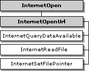
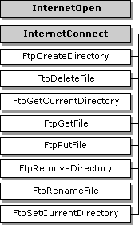
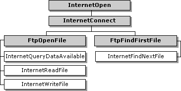
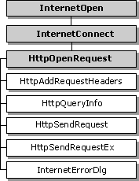
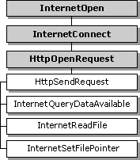
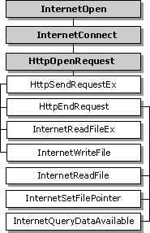

| ||||||
This section contains information about the handles that are used by the Win32® Internet functions and the hierarchy that they work in.
The handles that are created and used by the Win32 Internet functions are called HINTERNETs. The Win32 Internet functions return HINTERNET handles that are not interchangeable with the base Win32 handles, so they cannot be used with Win32 functions such as ReadFile or CloseHandle. Similarly, base Win32 handles cannot be used with the Win32 Internet functions. For example, a handle returned by CreateFile cannot be passed to InternetReadFile.
The InternetCloseHandle function closes handles of type HINTERNET. Note that handle values are recycled quickly; therefore, if a handle is closed and a new handle is generated immediately, there is a good chance that the new handle will have the same value as the handle just closed.
The HINTERNET handles are maintained in a tree hierarchy. The handle returned by the InternetOpen function is the root node. Handles returned by the InternetConnect function occupy the next level. Handles returned by the FtpOpenFile, FtpFindFirstFile, HttpOpenRequest, GopherOpenFile, and GopherFindFirstFile functions are the leaf nodes.
The following diagram illustrates the hierarchy of the HINTERNET handles. Each box in the diagram represents a Win32 Internet function that returns an HINTERNET handle.

At the top level is the InternetOpen function, which creates the root HINTERNET handle. The next level contains the InternetOpenUrl and InternetConnect functions. The functions that use the HINTERNET handle returned by InternetConnect make up the last level.
The following diagram shows the functions that are dependent on the HINTERNET handle created by InternetOpenUrl. The shaded boxes represent functions that return HINTERNET handles, while the plain boxes represent functions that use the HINTERNET handle created by the associated function.

InternetQueryDataAvailable, InternetReadFile, and InternetSetFilePointer use the HINTERNET handle created by InternetOpenUrl.
The following diagram shows the FTP functions that are dependent on the FTP session HINTERNET handle returned by InternetConnect. The shaded boxes represent functions that return HINTERNET handles, while the plain boxes represent functions that use the HINTERNET handle created by the function on which they depend.

FtpCreateDirectory, FtpDeleteFile, FtpGetCurrentDirectory, FtpGetFile, FtpPutFile, FtpRemoveDirectory, FtpRenameFile, and FtpSetCurrentDirectory all use the HINTERNET handle created by InternetConnect.
The following diagram shows the two FTP functions that return HINTERNET handles and the functions that are dependent on the HINTERNET handles created by them. The shaded boxes represent functions that return HINTERNET handles, while the plain boxes represent functions that use the HINTERNET handle created by the function on which they depend.

InternetFindNextFile is dependent on the HINTERNET handle created by FtpFindFirstFile, while InternetReadFile and InternetWriteFile use the HINTERNET handle created by FtpOpenFile.
The following diagram shows the Win32 Internet functions used for the Gopher protocol. The shaded boxes represent functions that return HINTERNET handles, while the plain boxes represent functions that use the HINTERNET handle created by the function on which they depend.

GopherGetAttribute is dependent on the HINTERNET handle created by InternetConnect. InternetFindNextFile uses the HINTERNET handle created by GopherFindFirstFile. The handle created by GopherOpenFile is used by InternetQueryDataAvailable and InternetReadFile.
The following diagram shows the relationships of the Win32 Internet functions that are used for the HTTP protocol. The shaded boxes represent functions that return HINTERNET handles, while the plain boxes represent functions that use the HINTERNET handle created by the function on which they depend.

HttpAddRequestHeaders, HttpQueryInfo, HttpSendRequest, HttpSendRequestEx, and InternetErrorDlg are dependent on the HINTERNET handle created by HttpOpenRequest.
The following diagram shows the Win32 Internet functions that use the HINTERNET handle created by HttpOpenRequest after it is sent by HttpSendRequest. The shaded boxes represent functions that return HINTERNET handles, while the plain boxes represent functions that use the HINTERNET handle created by the function on which they depend.

After HttpSendRequest has been used on the handle returned by HttpOpenRequest, InternetQueryDataAvailable, InternetReadFile, and InternetSetFilePointer can be used on that handle.

After HttpSendRequestEx has been used on the handle returned by HttpOpenRequest, HttpEndRequest, InternetReadFileEx, and InternetWriteFile can be used on that handle. After HttpEndRequest has been used, InternetReadFile, InternetSetFilePointer, and InternetQueryDataAvailable can be used on that handle.
Did you find this topic useful? Suggestions for other topics? Write us!
© 1999 Microsoft Corporation. All rights reserved. Terms of use.